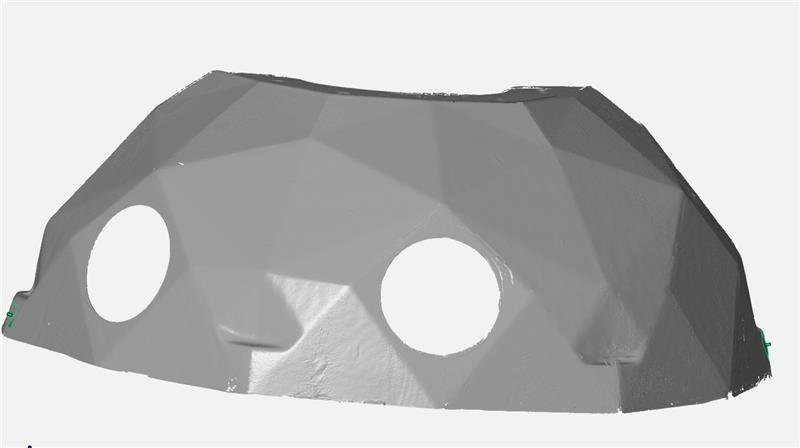
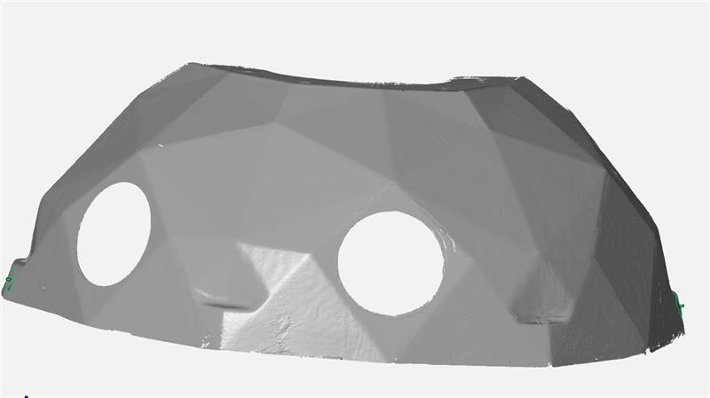

Projekt 3
Příprava pro skenování
Pro začátek bylo zapotřebí předmět připravit na skenování [Img2]. V mém případě bylo nutné nastříkaní předmětu křídových sprejem, aby se eliminovala průhlednost jeho povrchu [Img3]. Křídový sprej jsem opatrně nanesl na předmět v lakovacích boxu [Img4].
Následně bylo zapotřebí nalepit referenční skenovací body na předmět a umístit ho na skenovací otoční stůl společně se čtyřma referenčíma kostkama.
Údaje v programu na skener byly nastaveny na small a matný.


Měření naskenované plochy
Po úspěšném procesu naskenování součásti a wrapnutí celého projektu (převedení do stl.) jsem si otevřel výsledné stl v programu Gom Inspect 2019 [Img5]. V programu byly zaceleny díry vzniklé po referenčních bodech, snížen počet polygonů a vytvořen souřadný systém pro prědmět [Img6]. Po těchto úkonech bylo mozné vypočíst celkovou naskenovanou plochu pomocí funkce Area.
 

Měření největšího rozměru
Pomocí rovin a dvou bodů byla zkostruována kóta pro největší rozměr. Tento rozměr jsem zvolil jako největší podle optického odhadu. Po konstrukci kóty bylo nutno povolit její viditelnost společně s viditelností udáje pro vypočtenou plochu. Zmeřené udaje lze vidět na přiložené fotce [Img7].